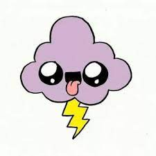
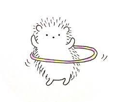

В переводе с английского «контент» означает информационное содержимое интернет-сайта. Например, оригинальные тексты, графические изображения, мультимедийные данные и другая информация, доступная для свободного просмотра. Контент для интернет-среды – продукт интеллектуальный, он имеет собственников (авторов) и автоматически попадает под действие закона об авторском праве. Среди пользователей востребован актуальный и достоверный текстовый контент, отвечающий поисковым запросам. ТОЛЬКО СЕГОДНЯ!!! купи БАРКУЛЕМАТООР ЗИЛЕНИЙ ШИК!
 Рерайтинг. Полная переработка оригинального материала на основе одного первоисточника. Весьма трудоемкая работа, требующая специфических познаний в предметной области, широкого кругозора и богатого словарного запаса. Позволяет получать технически уникальные тексты, подходящие для бюджетного наполнения сайтов.
Extended colors SVG Version of X11 color names The extended colors is the result of merging specifications from HTML 4.01, CSS 2.0, SVG 1.0 and CSS3 User Interfaces (CSS3 UI).[6] Several colors are defined by web browsers. A particular browser may not recognize all of these colors, but as of 2005, all modern, general-use, graphical browsers support the full list of colors.

Качественный контент – это не просто сочетание красивых слов и доходчивых фраз. Хороший текст содержит конкретные выгоды, которые получит каждый читатель: полезные знания, актуальную информацию, эстетическое удовлетворение. Заинтересованному и мотивированному посетителю важно быстро получить необходимую информацию, чтобы принять окончательное решение (купить, заказать, оформить, подписаться и т.д.).